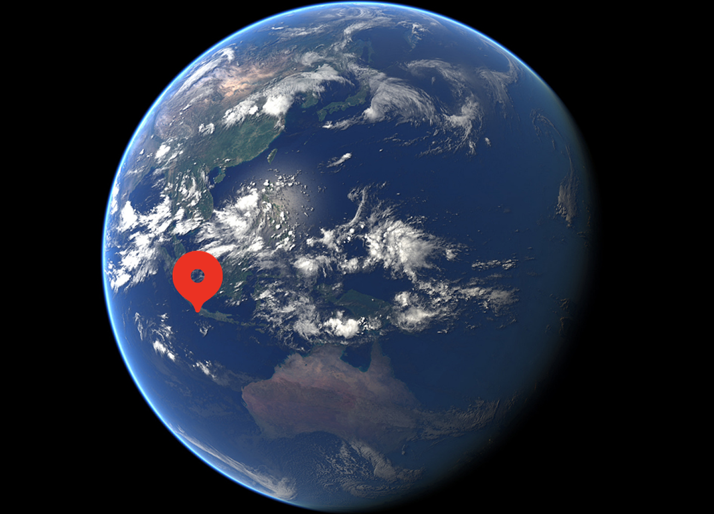

Der Tangkuban Perahu ist ein aktiver Vulkan in West-Java, Indonesien. Er liegt etwa 20 Kilometer nördlich der Stadt Bandung und erreicht eine Höhe von rund 2084 Metern. Sein Name bedeutet „umgedrehtes Boot“ und bezieht sich auf die charakteristische Form des Berges.

Geografische Lage
Der Vulkan befindet sich in der Nähe von Lembang in der Provinz West-Java. Er ist Teil des Sunda-Vulkanbogens, der durch die Subduktion der Indisch-Australischen Platte unter die Eurasische Platte entstanden ist.
Geologie und Aufbau
Der Vulkan besitzt mehrere Krater. Der bekannteste ist Kawah Ratu, ein grosser Hauptkrater mit sichtbarer Dampf- und Gasentwicklung.

Weitere Krater sind unter anderem Kawah Upas und Kawah Domas.
Der Tangkuban Perahu ist ein Schichtvulkan. Er besteht aus mehreren übereinanderliegenden Schichten von Lava, Asche und vulkanischem Gestein.
Mythos
Der Tangkuban Perahu ist nicht nur ein Vulkan, sondern auch Teil einer bekannten indonesischen Legende. Der Name „umgedrehtes Boot“ geht auf die Erzählung von Sangkuriang zurück, in der ein Boot eine zentrale Rolle spielt. So verbindet der Berg Natur, Geschichte und Mythos auf eindrückliche Weise.